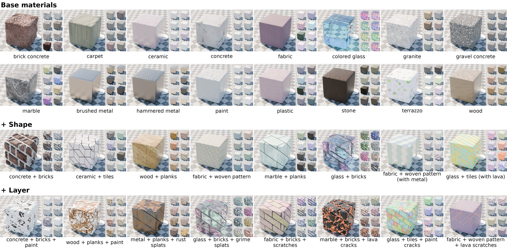
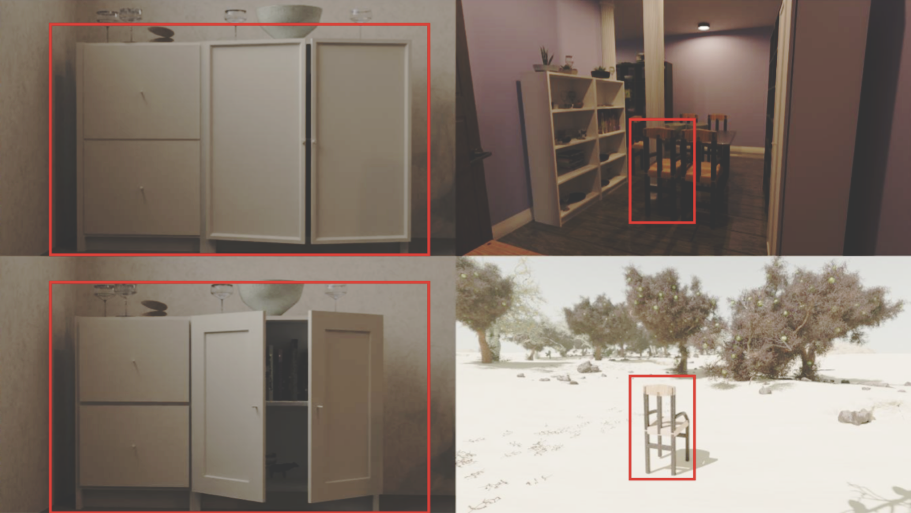
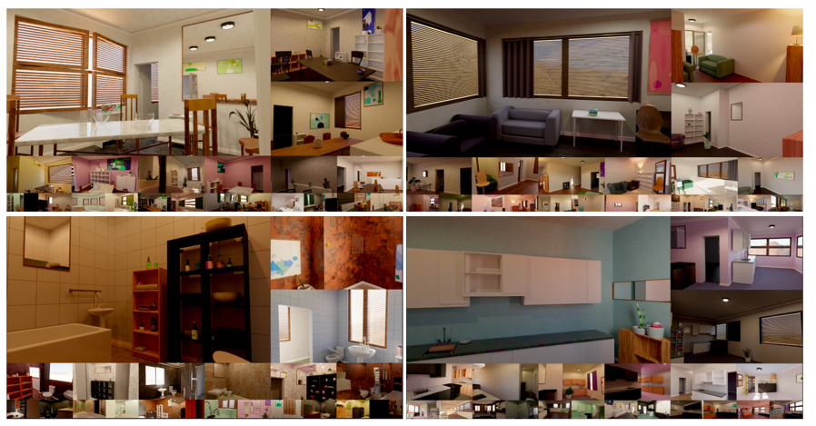
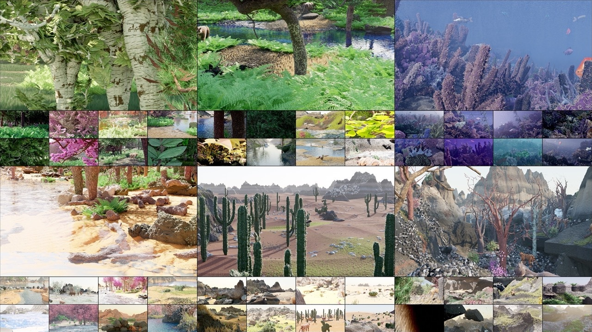
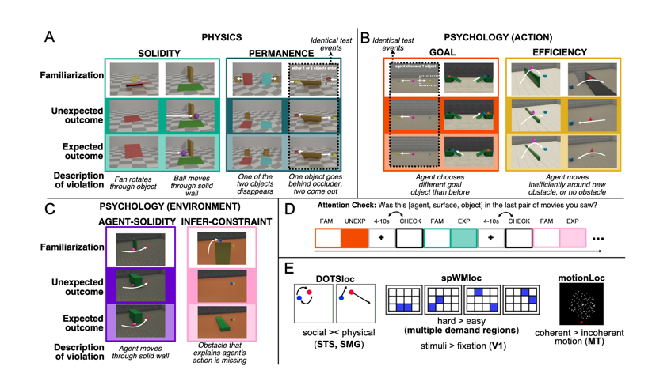
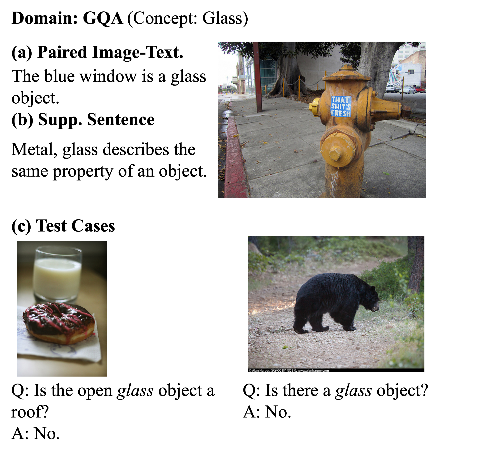
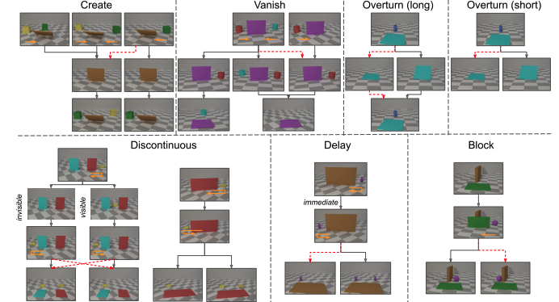
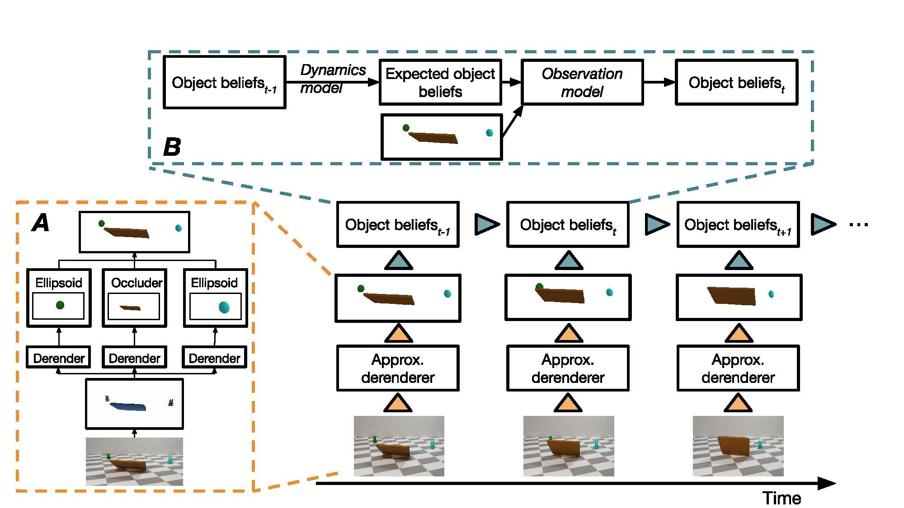

I am a Ph.D. candidate in Computer Science at Princeton University, advised by Professor Jia Deng. I received my M.Eng. in Computer Science and B.Sc. in Computer Science and Mathematics from MIT, where I worked with Professors Joshua Tenenbaum and Jiajun Wu. Here is my CV.
Research Interests
I build controllable 3D worlds to help machines learn to perceive, reason about, and act in the physical world. My research connects procedural generation, computer vision, and robotics: how can we generate structured, diverse synthetic experience that supports generalization beyond the training data?
Through Infinigen and ProcFunc, I develop compositional tools for generating and editing objects, materials, and scenes. I use controlled scene changes to evaluate visual robustness, and I am interested in extending this control to synthetic data for robot learning. This direction builds on my work on visual concept learning and intuitive physics: learning reusable concepts and models of how the world works from limited experience.
Teaching & Service
Teaching assistant and preceptor for MIT 6.036 and Princeton COS 324 and COS 423. Reviewer for NeurIPS 2024 and 2025, ECCV 2024, ICCV 2025, and CVPR 2026.
Writing
My Easter Sunday Testimony — a reflection on my journey to Christian faith, shared at the 5 a.m. Easter Vigil with the Episcopal Church at Princeton. .
Publications ( show selected / show all by date / show all by topic )
Topics: Vision & Graphics. Scene Understanding. Concept Learning (* indicates equal contribution)

ProcFunc: Function-Oriented Abstractions for Procedural 3D Generation in Python
Alexander Raistrick, Karhan Kayan, Jack Nugent, David Yan, Lingjie Mei, Meenal Parakh, Hongyu Wen, Dylan Li, Yiming Zuo, Erich Liang, Jia Deng
Composable Python functions for Blender-based geometry and materials, with tools for procedural code analysis, editing, and diverse synthetic scene generation.

Evaluating Robustness of Monocular Depth Estimation with Procedural Scene Perturbations
Jack Nugent*, Siyang Wu*, Zeyu Ma*, Beining Han*, Meenal Parakh, Abhishek Joshi, Lingjie Mei, Alexander Raistrick, Xinyuan Li, Jia Deng
A controlled benchmark for testing monocular depth models under changes to objects, cameras, materials, and lighting.

Infinigen Indoors: Photorealistic Indoor Scenes using Procedural Generation
Alexander Raistrick*, Lingjie Mei* , Karhan Kaan Kayan*, David Yan, Yiming Zuo, Beining Han, Hongyu Wen, Meenal Parakh, Stamatis Alexandropoulos, Lahav Lipson, Zeyu Ma, Jia Deng
CVPR 2024 Paper. Website. Code.
Procedural indoor assets and constraint-based scene arrangement, with export tools for embodied-agent simulators.

Infinite Photorealistic Worlds using Procedural Generation
Alexander Raistrick, Lahav Lipson, Zeyu Ma, Lingjie Mei, Mingzhe Wang, Yiming Zuo, Karhan Kayan, Hongyu Wen, Beining Han, Yihan Wang,Alejandro Newell, Hei Law, Ankit Goyal, Kaiyu Yang, Jia Deng
CVPR 2023 Paper. Website. Code. Video. Video.
A procedural system for generating diverse, photorealistic natural worlds and dense ground-truth annotations.

Violations of physical and psychological expectations in the human adult brain
Shari Liu, Kirsten Lydic, Lingjie Mei, Rebecca Saxe
CogSci 2023. Imaging Neuroscience 2024. Paper.
A study of how the human brain responds to violations of physical and psychological expectations.

FALCON: Fast Visual Concept Learning by Integrating Images, Linguistic descriptions, and Conceptual Relations
Lingjie Mei, Jiayuan Mao, Ziqi Wang, Chuang Gan, Joshua B. Tenenbaum,
A visual concept learner that combines images, language descriptions, and conceptual relationships to learn novel concepts.

The fine structure of surprise in intuitive physics: when, why, and how much?
Kevin Smith*, Lingjie Mei*, Shunyu Yao*, Jiajun Wu, Elizabeth S. Spelke, Joshua B. Tenenbaum, Tomer Ullman
An analysis of when, why, and how strongly people are surprised by violations of intuitive physics.

Modeling Expectation Violation in Intuitive Physics with Coarse Probabilistic Object Representations
Kevin Smith*, Lingjie Mei*, Shunyu Yao*, Jiajun Wu, Elizabeth S. Spelke, Joshua B. Tenenbaum, Tomer Ullman
NeurIPS 2019. Paper. Project. Video. MIT News
An object-based model combining visual recognition, probabilistic simulation, and tracking to predict physical events.
GitHub Projects
Paper projects
princeton-vl/procfunc: coauthor of the library for composing, analyzing, and editing procedural 3D generators in Python.
princeton-vl/infinigen: core contributor to Princeton VL's procedural scene generator for photorealistic synthetic data.
ADEPT-Model-Release: model code for the ADEPT intuitive-physics project (NeurIPS 2019).
ADEPT-Dataset-Release: dataset generation code for ADEPT.
FALCON-Release: PyTorch reference implementation for the FALCON visual concept learner (ICLR 2022).
princeton-vl/cvdpack: contributor to tooling for reorganizing and compressing RGB/Depth/Flow/Normal frame datasets.
Non-paper projects
blocher/dailyoffice2019: contributor via pull requests to the Daily Office 2019 website codebase.
WinogradConvolution: Julia + CUDA implementation of Winograd convolution kernels.
NonlinearPDE: multigrid-based iterative solver for nonlinear PDEs.
BayesianLanguageLearningPython: compositional language evolution from a Bayesian perspective.
Contour3D: 3D contour reconstruction and visualization experiments.
FastMultipleMethod: implementation of 1D fast multipole method.
StarRailCopilot: maintained fork for Honkai: Star Rail automation tooling.
ece475-proj: RISC-V 32I processor with vectorization support.
Competitive_SIR: simulation of competing rumor dynamics with compartmental models.
AtariRepresentation: experiments on representation generalization in Atari games.